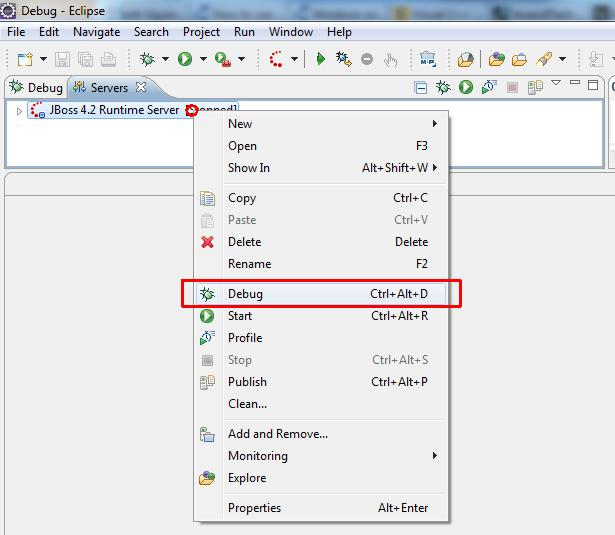

Managing JBoss with Eclipse
After configuring JBoss Tools plugin we can start/stop our JBoss server. Don't forget to deploy SOEMPI manually
if you are not configured JBoss Tools for automatic deployment.
- To start JBoss in debug mode right click on our server in the Server View and select "Debug":

- You'll see messages in the Console window. Wait until the application starts, the console should show something like this:
12:56:03,516 INFO [EARDeployer] Started J2EE application: file:/C:/jboss/server/default/deploy/openempi-2.1.3-SNAPSHOT.ear
12:56:03,766 INFO [Http11Protocol] Starting Coyote HTTP/1.1 on http-0.0.0.0-8080
12:56:03,811 INFO [AjpProtocol] Starting Coyote AJP/1.3 on ajp-0.0.0.0-8009
12:56:03,883 INFO [Server] JBoss (MX MicroKernel) [4.2.3.GA (build: SVNTag=JBoss_4_2_3_GA date=200807181439)] Started in 1m:6s:424ms
- You can stop JBoss any time right clicking the same place as with the start, but this time you choose "Stop".